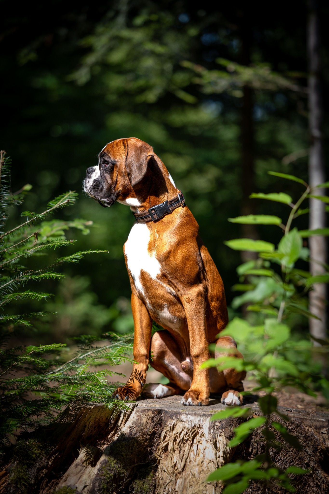

Termine werden geladen …
Schweizerischer Boxer-Club · Ortsgruppe Bern
100 Jahre.
Eine Leidenschaft.
Seit 1926 verbindet uns die Freude am Deutschen Boxer – im Hundesport, im Alltag und in einer lebendigen Clubgemeinschaft.
Bi üs fägts – chunsch ou?
Boxer, Sport & Gemeinschaft.
Im Struchismoos bei Uettligen trainieren wir mit unseren Boxern mit Freude, Konsequenz und viel Herzblut. Vom Familienhund bis zum Sport- und Gebrauchshund stehen eine zeitgemässe Ausbildung, gemeinsame Erlebnisse und das Miteinander im Mittelpunkt.
Unsere Ortsgruppe ist Trainingsplatz, Treffpunkt und Zuhause für Menschen, die ihre Begeisterung für den Deutschen Boxer teilen.

100
1926–2026
Ein Jahrhundert Boxerleidenschaft in Bern.
2026 feiern wir 100 Jahre Ortsgruppe Bern. Hinter diesem Jubiläum stehen Generationen von Mitgliedern, Hunden, Helferinnen und Helfern.
Unsere GeschichteAgenda
Als Nächstes.
Training, Prüfungen und Clubanlässe – automatisch die nächsten Termine.
Aktuell
Aus unserem Club.
Die neuesten Meldungen, Rückblicke und Geschichten aus der OG Bern.
News werden geladen …
Training & Clubleben
Mehr als ein Hundeplatz.
Hundesport
Begleithund, Fährte, Sanität, IGP und weitere Ausbildungsbereiche.
Alltag & Familie
Auch ohne Prüfungsziel bist du willkommen. Gute Führigkeit und Beschäftigung stehen im Zentrum.
Clubleben
Prüfungen, Spaziergänge, Jubiläen, Arbeitseinsätze und gemütliche Stunden gehören dazu.
Neugierig?
Komm uns im Struchismoos besuchen.
Du möchtest mit deinem Boxer trainieren oder unsere Ortsgruppe kennenlernen?
Kontakt aufnehmen